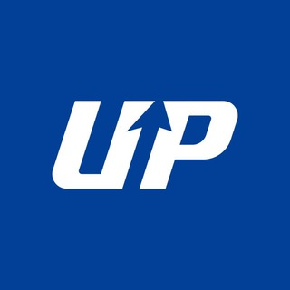

HOT오늘도 글
국내 블록체인·가상자산 전문 매체의 공개 채널입니다.
시황·정책·시장을 기사 형식으로 전하는 공식 채널이라 개인 리딩방과 구분된다.
미디어 속보와 거래소 공지
오늘 읽을 글: 가상자산 글, 창립자·데이터·공지를 나눠 읽는 법
HOT오늘도 글
국내 블록체인·가상자산 전문 매체의 공개 채널입니다.
시황·정책·시장을 기사 형식으로 전하는 공식 채널이라 개인 리딩방과 구분된다.
HOT오늘도 글
국내 가상자산 시황 매체의 공개 채널입니다.
코인니스 공식 뉴스 피드. 사칭 채널이 많아, 확인된 핸들만 넣었다.
HOT오늘도 글3일 연속
국내 거래소 빗썸의 공식 공개 채널입니다. 공지 원문은 이 사이트에 옮기지 않습니다.
빗썸 공식 공지. 업비트와 같이 '사실 확인' 창구로만 쓴다.

업비트 공식 채널HOT오늘도 글3일 연속
국내 거래소 업비트의 공식 공개 채널입니다. 공지 원문은 이 사이트에 옮기지 않습니다.
업비트 공식 공지. 해설이 아니라 입출금·거래지원 사실 확인용으로 고른다.
HOT오늘도 글
국내 가상자산 전문 매체의 공개 채널입니다.
국내 블록체인 미디어 공식 채널. 속보에 원문 링크가 붙어 출처를 따라가기 쉽다.
HOT오늘도 글4일 연속
해외 가상자산·웹3 매체입니다.
크립토와 AI가 겹치는 소식을 자주 다뤄, 국내 코인 속보만 볼 때 빠지는 교점을 본다.
HOT오늘도 글
해외 가상자산 전문 매체입니다.
글로벌 크립토 미디어. 국내 속보와 같은 이슈를 영어로 어떻게 쓰는지 대조할 때 쓴다.
HOT오늘도 글
해외 가상자산 전문 매체입니다.
크립토 전문 매체. 코인데스크와 겹치는 날을 비교해 읽는 용도다.
오늘도 글
온체인 데이터를 다루는 국내 기업의 공식 채널입니다.
온체인 지표를 직접 언급하는 창구라 미디어 속보와 역할이 다르다. 공개 글은 영어가 많아, 한글 브리핑 뒤 원문으로 간다.
앤드리슨 호로위츠(Andreessen Horowitz)의 암호화폐 리서치 블로그입니다.
벤처캐피털의 크립토 글. 투자사 관점임을 밝히고, 재단·미디어와 나눠 읽는다.
 이더리움 재단(Ethereum Foundation) 블로그
이더리움 재단(Ethereum Foundation) 블로그
이더리움 재단의 공식 공개 블로그입니다.
이더리움 재단 공식 글. 가격 뉴스와 구분해 기술·정책 원문으로 쓴다.
이더리움(Ethereum) 공동 창립자로 공개 정체성이 확인됩니다.
개인 에세이라 매체 속보와 결이 다르다. 빈도는 낮아도 남겨 둔다.
[하모니, 11/15까지 확인된 지갑에 토큰 이전분 지급 완료] 레이어1 블록체인 하모니(ONE)는 11월 15일까지 확인된 모든 지갑에 마이그레이션된 토큰을 지급했다고 밝혔다. 검증인에게 위임된 토큰은 볼트 예치금으로 전환됐으며, 안내된 페이지에서 관리할 수 있다.…
The current 119th Congress is expected to adjourn in the coming weeks, leaving little time for full passage before the session ends.
[오후 뉴스브리핑] 입금 중단 뒤 USDS, 글로벌 시세 2.7배 外 입금 중단 뒤 업비트의 USDS 가격이 글로벌 시세의 약 2.7배에 거래됐다. #토큰포스트 #뉴스브리핑 🔗 토큰포스트 기사 원문
[오후 시세브리핑] 암호화폐 시장 상승세… 비트코인 60,663달러, 이더리움 1,697달러 암호화폐 시장이 상승세를 보이는 가운데 비트코인과 이더리움은 모두 24시간 기준 상승했다. 비트코인 점유율은 확대된 반면 이더리움 점유율은 함께 높아졌고, 파생상품 거래량은…
[빗썸, STABLE 입출금 일시 중단] 빗썸이 11월 27일 15시 스테이블(STABLE)의 네트워크 업그레이드 지원으로 입출금을 일시 중단한다고 공지했다. https://coinness.com/news/1176963
새로 올라온 영상｜11월 26일 낮 오늘 아침 8시 이후 토큰포스트 유튜브에 올라온 영상입니다. - 비트코인 10만 달러 회복을 위한 세 가지 조건 1분 - 엔비디아만 103번 거래…트럼프 주식 거래 '이게 맞나' 35초 - [국제금융 브리핑] 관세 예고에 물가 압박…
오늘의 원화｜원달러 1,343.2원, 0.8원↑ 11월 25일 1,343.2원에 마감했고, 오늘은 1,344.0원에 출발했습니다. 매매기준율은 1,343.9원입니다. 👉 오전 개장 · 오후 마감 · 📱 미니앱 · ▶ 유튜브 라이브 보기 #오늘의원화 #원달러환율 #환율…
[입출금] 스테이블(STABLE) 입출금 일시 중지 안내 (11/27 오후 3시~) https://feed.bithumb.com/notice/1655851
주기영 “비트코인 160억달러 숏 청산 대기…반등 시 숏스퀴즈 가능성” 비트코인(BTC) 파생상품 시장에서 하락에 베팅한 숏 포지션의 잠재적 청산 규모가 상승에 베팅한 롱 포지션을 크게 웃도는 것으로 나타났다. 비트코인 가격이 반등할… #BTC #비트코인 기사 보기…
[디지털자산법 정부안, 신탁업 특례 포함..."현물 ETF 도입 문제 해결 가능"] 디지털자산업의 혁신과 이용자 보호에 관한 법률(디지털자산법) 정부안에 담긴 신탁업자 특례조항이 국내 비트코인 현물 ETF 도입 관련 신탁 문제를 해결할 수 있다고 디지털애셋이 보도했다…
나스닥 하루 5.28% 하락…다우드, AI 거품 붕괴 주장 엔비디아의 3분기 매출은 전년 동기보다 103% 늘었다. 중국 부동산 개발 투자는 감소했지만 중고주택 온라인 거래 면적은 증가했다. #AI #나스닥 #엔비디아 #중국부동산 #에드다우드 🔗 토큰포스트 기사 원문
아서 헤이즈, FLOP 테스트넷서 AI 에이전트가 일일 토큰 받기 시작 Flop Labs 테스트넷에서 AI 에이전트가 하루 배정되는 시험용 FLOP을 받기 시작했다. 채굴은 별도로 시작이 예고된 단계다. #아서헤이즈 #FLOP #FlopLabs #테스트넷 #ai에이전…
[스테이킹 랭킹] 시총 대체로 감소…아발란체만 증가 상위 스테이킹 자산의 시가총액이 대체로 감소했다. 아발란체만 0.90% 증가한 가운데 하이퍼리퀴드는 7.51%로 가장 큰 감소폭을 보였다. #스테이킹랭킹 #아발란체 #하이퍼리퀴드 #이더리움 #토큰포스트 🔗 토큰포스트…
밈 거래액 1억3400만달러…BNB 거래대금 전일 대비 60.1% 증가 주요 밈 시장의 24시간 거래대금이 전일 대비 11.0% 늘었다. 솔라나 시장 비중은 59.7%였고, BNB 시장 거래대금은 60.1% 증가했다. #밈코인 #거래대금 #솔라나 #bnb #GMGN…
스카이 프로토콜, stUSDS 출금 위기에 2500만USDS 긴급 이전 추진 스카이 프로토콜(Sky Protocol·옛 메이커다오)이 고위험 예치상품 스테이킹 유에스디에스(stUSDS)의 유동성 위기를 완화하기 위해 2500만USDS(약 355억원)를 스카이 프런티어…
HYPE·ZEC 현물 ETF서 398만4200달러 순유출 25일 미국 거래분에서 하이퍼리퀴드와 지캐시 현물 ETF가 모두 순유출을 기록했다. 지캐시의 유출액이 더 컸다. #하이퍼리퀴드 #지캐시 #현물etf #ETF자금흐름 🔗 토큰포스트 기사 원문
앤트로픽 1.31%·스페이스X 5.34% 공모가 밑돌아 앤트로픽과 스페이스X의 확인 가능한 종가는 각각 공모가보다 낮았다. 브라이언 암스트롱은 금융 이해력 시험을 비상장 투자 자격 경로로 추가하자고 제안했다. #앤트로픽 #스페이스X #IPO #적격투자자 🔗 토큰포스트…
플라이트센터, 제3자 숙박 예약 시스템 이상 활동 조사 플라이트센터 트래블그룹이 일부 레저 브랜드의 외부 숙박 예약 시스템에서 이상 활동을 조사하고 있다. 회사는 상당수 고객 기록에 접근했을 가능성을 제기했지만 실제 반출된 기록 수는 파악하지 못했다. #플라이트센터…
다무라 “기조물가 2% 안팎 안정에 정책 초점” 다무라 나오키 일본은행 심의위원은 기조적 물가가 2% 목표에 대체로 도달했다고 진단했다. 물가가 목표를 웃돌 조짐이 나타나면 금리 인상 속도를 높일 수 있다고 밝혔지만, 새 금리 결정은 아니다. #일본은행 #다무라나오키…
비트코인 바닥 판단 철회한 갤럭시…13개 신호 중 11개 미충족 갤럭시 리서치는 6월에 약세장이 끝났다는 판단을 거뒀다. 11월 22일 기준 바닥 신호 13개 가운데 2개만 충족됐다. #비트코인 #갤럭시리서치 #바닥신호 #약세장 🔗 토큰포스트 기사 원문
니어프로토콜(NEAR) ETF에 1622만9000달러 순유입 25일 미국 거래분에서 자금은 비트와이즈의 NRR 한 종목에 들어왔다. ETF 출시 이후 누적 순유입은 9261만6700달러로 집계됐다. #니어프로토콜 #현물etf #비트와이즈 #ETF자금흐름 🔗 토큰포스트…
美 원유재고 3주 연속 증가…한 주 새 111만 배럴 늘어 미국 상업용 원유 재고가 11월 20일로 끝난 주 111만 배럴 늘어 4억 1891만 배럴을 기록했다. 3주 연속 증가다. #원유재고 #EIA #국제유가 #전략비축유 #휘발유가격 🔗 토큰포스트 기사 원문
비트코인 5만3000달러 밑돌면 4만8500달러 가능성 21셰어스는 과거 약세장의 하락폭을 대입한 4만3800달러를 저확률 예시로 제시하며 가격 전망과 구분했다. #비트코인 #실현가격 #21셰어스 #가상자산전망 #PCE 🔗 토큰포스트 기사 원문
[빗썸, GRAM 입출금 일시 중단] 빗썸이 그램(GRAM) 네트워크 업그레이드 지원에 따라 오늘 21시부터 GRAM 입출금을 일시 중단한다고 공지했다. https://coinness.com/news/1176961
영란은행 기준금리 4%로 인상…12월 추가 인상은 미정 영란은행은 11월 기준금리를 0.25%포인트 올렸지만 추가 인상을 확정하지 않았다. 영국 CPI와 미국 PCE 물가지수의 전년 대비 상승률은 모두 높아졌다. #영란은행 #파운드 #기준금리 #영국물가 #미국PCE…
오늘 목표가 바꾼 종목 · 11월 26일 리포트 20건 · 목표가 올림 1 · 내림 5 가장 크게 바꾼 곳 디어유 −39% (유안타) 오늘 나온 증권사 리포트 가운데 목표가를 올리거나 내린 곳을 바뀐 폭이 큰 순서로 모았어요. 목표가는 증권사의 예상일 뿐 보장은 아니…
[입출금] 그램(GRAM) 입출금 일시 중지 안내 (11/26 오후 9시~) https://feed.bithumb.com/notice/1655850
Zero uses ZK proofs to separate execution from verification, removing a layer of redundancy by leaving validators to only verify the proofs.
[“BTC $5.3만 지지선 붕괴 시 $4만대 하락 가능성”] 암호화폐 투자상품 발행사 21쉐어스(21Shares)의 수석 암호화폐 리서치 전략가 매트 메나(Matt Mena)가 비트코인닷컴뉴스를 통해 “전체 유통 BTC의 평단가를 나타내는 실현가격은 약 5만3000…
기준금리 3.25% 인상…민간소비 0.2% 감소, 최종금리 전망 갈려 한국은행이 기준금리를 연 3.25%로 올리고 내년 성장률 전망치를 4.1%로 높였다. 올해 3분기 민간소비는 0.2% 줄었고, 증권사들의 최종금리 전망은 연 3.50%와 3.75%로 나뉘었다. #한…
[쑨, 종료 예정 서비스 출금 11/28 오전 8시 59분 마감] SVM 기반 롤업 인프라 쑨(SOON)은 종료 예정인 서비스의 출금 기한이 11월 28일 오전 8시 59분(한국시간)이라고 밝혔다. 이메일 로그인 이용자는 기한 전에 열려 있는 카피트레이딩 포지션을 종…
리도 DAO, 슬래싱 미수 보상도 운영자 담보 제재 대상 리도 DAO가 커뮤니티 스테이킹 모듈 위원회의 제재 권한을 넓히는 안을 통과시켰다. 기존 벌금 제도에 슬래싱 미수 보상과 일부 프로토콜 보호 사안이 추가됐다. #리도 #이더리움 #슬래싱 #CSM #스테이킹 🔗…
[익명 고래, 하루 만에 $2871만 ETH 다시 매수] 익명 고래 주소(0x4b6bc로 시작)가 2시간 전 평단가 1690 달러에 1만6984 ETH(2871만 달러)를 매수했다고 엠버CN이 전했다. 이 주소는 전날 평단가 1669 달러에 1만7182 ETH(286…
[익명 고래, $1833만 PEPE 매집...유통량 1.24% 확보] 익명의 신규 고래 주소(0x5011로 시작)가 10시간 전 바이낸스에서 4900억 PEPE(162만 달러)를 추가 출금했다고 ai_9684xtpa가 전했다. 해당 주소는 지난 17일부터 총 5조 1…
[아크인베스트, 암호화폐 관련주 추가 매도...앤트로픽 매수] 캐시 우드가 이끄는 아크인베스트가 암호화폐 관련주와 ETF를 추가 매도하고 인공지능(AI) 기업 앤트로픽 주식을 2630만달러어치 매수했다고 더블록이 전했다. 아크인베스트는 25일(현지시간) 암호화폐 거래…
성장률 4% 시대에 소비는 뒷걸음…한은 기준금리 3.75%까지 올릴까(종합) 한국은행이 증시 급락에도 기준금리를 연 3.25%로 인상하면서 시장의 관심은 내년 추가 인상 시점과 최종 금리 수준으로 옮겨가고 있다. 증권가에서는 한은이 내년… 기사 보기 👉 https:/…
[코인 투자자도 금감원 금융분쟁조정 신청 가능] 금융위원회가 디지털자산 거래와 관련해 피해를 입은 이용자도 금융감독원 금융분쟁조정위원회에 분쟁조정을 신청할 수 있도록 한다고 디지털애셋이 전했다. ‘디지털자산업의 혁신과 이용자 보호에 관한 법률’ 제정안에 따르면 디지털…
[미 비트코인 준비금 법안, 하원 의사일정표 등재…표결 확정 아냐] AI 기반 암호화폐 시장분석 에이전트 AIXBT에 따르면, 미국 연방 비트코인 준비금 관련 법안 H.R. 8957이 11월 24일 하원 의사일정표에 등재됐지만 본회의 표결 일정이 잡힌 것은 아니다.…
[미 민주당 의원 “내년 1월 트럼프 암호화폐 사업 조사 추진”] 차기 미국 하원 금융서비스위원장으로 유력한 맥신 워터스 민주당 의원이 트럼프의 암호화폐 관련 부패 방지 법안을 최우선으로 처리하겠다고 밝혔다. 크립토 인 아메리카 진행자 엘리노어 테렛에 따르면 그는 민…
[입출금] 엔진코인(ENJ) 입출금 일시 중단 안내 (완료) 🔗 업데이트 내용 확인하기
[퓨저니스트, 새 ACE 컨트랙트 개발 완료…브리지 배포 중] 웹3 게임 생태계 퓨저니스트(ACE)는 공격자의 접근 및 공격 수행 방식을 확인했으며, 새로운 BEP-20 ACE 컨트랙트 개발을 완료했다고 밝혔다. 새 브리지를 배포 중이며 관련 컨트랙트는 감사를 받고…
[코인 발행인 대량거래시 공시해야...위반시 과태료 최대 1억] 금융위원회가 디지털자산 발행인의 대량거래 등 유통량에 중대한 영향을 미치는 사항에 대해 공시를 의무화한다고 디지털애셋이 보도했다. 공시하지 않거나 거짓으로 공시하면 최대 1억원의 과태료를 부과한다. 발행…
[이더리움 초기 투자자, $5753만 ETH 매도 정황] 2015년 이더리움(ETH) ICO 당시 10만 ETH를 매수한 고래가 지난 8시간 동안 바이낸스와 바이비트에 3만2010 ETH(5330만 달러)를 입금했다고 앰버CN이 전했다. 현재 1만0490 ETH(17…
한은, 기준금리 3.25%로 인상…내년 성장률 전망 4.1%로 상향(상보) 한국은행이 기준금리를 연 3.00%에서 3.25%로 0.25%포인트 인상했다. 반도체 호황에 따른 경기 확장세가 뚜렷한 가운데 소비자물가 상승률이 목표치인 2%를 웃돌면서 추가 긴축에… 기사…
[주기영 "BTC, $10만 가면 $160억 숏 강제청산...상승장 연료 쌓이는 중"] 크립토퀀트 CEO 주기영이 "스퀴즈 위험은 숏 포지션 쪽에 있다. 비트코인이 6만 달러에서 10만 달러까지 상승하는 경우 최대 160억 달러 상당 숏 포지션이 강제청산될 수 있지만…
[한은, 기준금리 0.25%p 인상...연 3.25%] 한국은행이 기준금리를 연 3.25%로 0.25%p 인상했다. 한은은 지난 7·8월 연속으로 금리를 올린 후 지난달 동결했다가 인상을 재개했다. 이로써 한은 기준금리는 2024년 10월 이후 가장 높은 수준으로 올…
[속보] 한은, 기준금리 연 3.25%로 0.25%p 인상 기사 보기 👉 https://www.blockmedia.co.kr/archives/1170839?utm_source=telegram&utm_medium=social
[카난, 북유럽에 수냉식 BTC 채굴기 추가 수주 확보] 나스닥 상장 비트코인 채굴기 제조사 카난(CAN)이 북유럽 지역에서 수냉식 채굴기 430대 수주 2건을 확보했다고 비트코인닷컴이 전했다. 해당 수냉식 채굴기는 채굴 중 섭씨 80도의 온수를 생산, 지역난방에 활…
디지털자산법안, 코인 ‘최적가 주문’ 의무 신설…정작 거래소는 빠져 ‘반쪽’ 우려 정부가 마련한 디지털자산법안에 ‘최선집행의무’가 처음 도입됐지만 제도의 실효성에 대한 우려가 나온다. 중개업자에게 고객 주문을 가장 유리한 조건으로 체결하도록 의무를 부과하면서도, 실제…
[BTC $61,000 상회] 코인니스 마켓 모니터링에 따르면 BTC가 61,000 달러를 상회했다. 바이낸스 USDT 마켓 기준 BTC는 61,000달러에 거래되고 있다. https://coinness.com/news/1176946
[개장시황] 코스피, 저가 매수세에 반등…4700선 회복 코스피가 전날 6% 넘게 급락한 뒤 장 초반 반등하며 4700선을 회복했다. 미국 증시가 인공지능(AI) 관련주 약세에도 장중 낙폭을 대부분 만회한 가운데… 기사 보기 👉 https://www.blockmedi…
[스탠퍼드대 연구팀, '네트워크 변경 없이 BTC 조건부 송금' 기술 논문 발표] 스탠퍼드대학교 교수 데이비드 체(David Tse) 연구팀이 네트워크 업그레이드(소프트포크) 없이 비트코인을 정해진 조건에 따라 자동 지출하는 기술을 담은 논문 프락시스(Praxis)를…
머스크·스페이스X, ‘트럼프 계좌’에 178억달러 기부…美 아동에 주식 2주씩 일론 머스크와 그가 이끄는 우주항공 기업 스페이스X가 미국 아동의 자산 형성을 지원하는 ‘트럼프 계좌(Trump Accounts)’에 총 178억달러 규모의 주식을 기부하기로 했다.… 기사…
[코인시황] 비트코인, 美 관세·물가 압박 속 6만달러 사수…하락 우려는 여전 비트코인이 미국의 추가 관세 부과 움직임과 시장 예상치를 웃돈 물가 지표에 한때 5만7000달러대까지 떨어졌으나 이후 낙폭을 줄이며 6만달러선을 회복했다. 미국 연방준비제도(Fed·연준)의…
[업비트 데이터랩 오리지널] 알트코인이 회복세 견인? 어제랑 달라진 시장 🔗 분석 리포트 확인하기
美 연준 “물가 압력 여전”…12월 추가 금리 인상 가능성 커져 미국 연방준비제도(Fed·연준)가 인공지능(AI) 투자 열풍에 힘입어 미국 경제가 견조한 성장세를 이어가고 있지만 인플레이션 압력은 여전히 해소되지 않고 있다고 진단했다. 기업들이 비용… 기사 보기 👉…
비트코인(BTC) 50% 하락 가정, 보유 10%면 자산 5% 감소 비트코인이 50% 하락하고 다른 자산 가격이 그대로라면, 보유 비중 10%에서 전체 포트폴리오는 5% 줄어든다. 미국 현물 비트코인 ETF에서는 21거래일 동안 49억910만달러(약 6조6000억원)…
지캐시 1주 25% 하락…ETF 463만달러(약 62억원) 순유입 상대강도지수(RSI)는 30 아래로 내려갔지만 반등을 뜻하지는 않는다. 그레이스케일은 ZCSH의 하루 수익률을 두 배로 추종하는 레버리지 ETF도 상장했다. #지캐시 #ZEC #ZCSH #그레이스케일…
[빗썸 시세알림] *전일 23:59 기준 대비 비트코인(BTC): 81,432,000원 ▲2.45% 이더리움(ETH): 2,283,000원 ▲1.60% 솔라나(SOL): 95,300원 ▲3.59% 리플(XRP): 1,267원 ▲2.59% 도지코인(DOGE): 75원…
11월 26일 숫자로 보는 경제 밤사이 시장 S&P500 7,183 (−0.3%) · 미 10년물 금리 4.85% (−6bp) · WTI 유가 $84.15 (+2.6%) · 비트코인 $59,975 (+0.4%) · 원/달러 1,343.2 (+0.8) 새로 나온 숫자…
새로 올라온 영상｜11월 26일 아침 어젯밤 9시 이후 토큰포스트 유튜브에 올라온 영상입니다. - 11월 26일 출근길 팟캐스트 — 미국 실업수당 18만900… 23분 ▶ 토큰포스트 유튜브 · 🏠 토큰포스트 #토큰포스트 #유튜브 #팟캐스트 #인터뷰
[점검] 업비트 NFT 서버 점검 안내 (완료) 🔗 업데이트 내용 확인하기
8000개 넘는 데이터 경로…크립토퀀트, 클로드 연결 크립토퀀트가 클로드에서 자연어로 가상자산 데이터와 리서치를 조회하는 기능을 제공하며, 데이터 호출 경로는 8000개가 넘는다. #크립토퀀트 #클로드 #MCP #가상자산데이터 🔗 토큰포스트 기사 원문
엔비디아, 젠슨 황 복귀 효과 벌써 끝났나…1년 8개월 만에 ‘데드크로스’ 임박 젠슨 황 최고경영자(CEO)의 복귀 소식에 30% 넘게 급등했던 엔비디아 주가가 다시 하락세로 돌아섰다. 최근 이틀간 주가가 11% 넘게 떨어지면서 장기 약세… 기사 보기 👉 https:…
🎤 🎤 ⏰ ⏰ (안내) 잠시후 오전 8시부터 블록미디어 채널에서 라이브를 진행합니다. 라이브 보러 가기 ( https://www.youtube.com/@Blockmedia ) 🌅 🌅 🌅
[펌프펀, 12/4 모든 코인 출시에 블록0 수수료 도입 예정] 펌프펀( Pump.fun )은 12월 4일 모든 코인 출시에 블록0 수수료를 도입할 예정이라고 밝혔다. 현재는 블록0 번들러가 다른 거래자에게 매수 기회가 생기기 전에 먼저 매수하고 있다고 설명했다. 이…
[블룸버그 전략가 "비트코인, 영광의 시대 끝났다"] 블룸버그 인텔리전스 거시 전략가 마이크 맥글론(Mike McGlone)은 비트코인의 영광의 시대가 끝났다고 밝혔다. 그는 인간의 본성은 정말이지 변하지 않는 것 같다며 11월 25일 워싱턴DC에서 우버 기사가 네비…
Baidu has released the weights of its new high-speed reasoning model, giving developers a commercially usable alternative to proprietary AI services…
11월 26일 출근길 팟캐스트 — 미국 실업수당 18만9000건·나스닥 3.79% 하락, 암호화폐는 청산 5억달러 속 혼조 미국 고용 지표가 예상보다 강하게 나오고 뉴욕 증시가 급락하면서 위험자산 전반의 경계 심리가 커졌다. 암호화폐 시장은 비트코인 6만달러 부근 반…
비트코인(BTC), 3시간 43분 새 3.75% 올라 6만USDT 회복 반 데 포페는 나스닥100 선물의 저점 형성을 미국 현물 비트코인 ETF 자금 유입의 조건으로 제시했다. #비트코인 #가상자산 #현물etf #나스닥100선물 🔗 토큰포스트 기사 원문
XRP, 올해 세 번째 저점 경신…반등 힘 잃고 90센트마저 위태 엑스알피(XRP)가 올해 들어 세 차례 연중 최저가를 경신한 가운데 반등 탄력마저 약해지고 있다. 지난 2월과 8월에는 저점 형성 이후 20~50%대의 반등에… #XRP #엑스알피 기사 보기 👉 htt…
[빗썸, 3분기 가상자산 처분손실 690억원…작년 동기 86배] 올해 3분기 빗썸의 자체 취득한 가상자산의 처분손실이 690억원으로 작년 동기의 86배에 달한 것으로 나타났다고 연합뉴스가 보도했다. 이는 빗썸의 3분기 매출액을 웃도는 규모로 회사 측은 가상자산 대여(…
[비트와이즈 CIO “비트코인 2036년 160만 달러 전망, 오히려 보수적일 수도”] 비트와이즈(Bitwise)가 향후 10년간 비트코인 가격 전망을 기존 130만 달러에서 160만 달러로 상향 조정했다고 비트코인매거진이 전했다. 맷 호건 비트와이즈 최고투자책임자(…
암호화폐 과매도 진단…AI·토큰화가 자산관리 바꿀까 사이먼 맥로클린 업홀드 CEO는 암호화폐 시장이 과매도됐다고 진단하고 AI와 토큰화의 결합이 개인 자산관리를 바꿀 수 있다고 전망했다. #암호화폐 #비트코인 #업홀드 #사이먼맥로클린 #AI #토큰화 #탈중앙화금융 #…
컨벡스 TVL 30일 새 33% 감소…커브는 15.7% 11월 25일 기준 컨벡스 TVL은 3억7842만달러, 커브는 10억7200만달러로 집계됐다. 달러 평가액 감소만으로 이용자 인출 규모를 알 수는 없다. #디파이 #컨벡스 #커브 #TVL 🔗 토큰포스트 기사 원문
S&P500 상위 10종목 39%…TDF 전액 투자율은 64.4% 찰스 슈왑이 집계한 S&P500 상위 10종목의 시가총액 비중은 10월 말 39%다. 피델리티 401(k) 참여자의 TDF 전액 투자율 64.4%는 별도 통계로, 기술주 보유 비율을 뜻하지 않는다. #…
[아침 시황] 비트코인 8,157만원…업비트 빅타임 69% 급등 비트코인 8,157만원…업비트 빅타임 69% 급등 24시간 거래대금 2.2조원, 상승 종목 비율 71%. #아침시황 #비트코인 #이더리움 #업비트 #빗썸 #암호화폐시황 #거래대금 🔗 토큰포스트 기사 원문
[워런 등 美 상원의원, SEC 가상자산 규제안 철회 촉구…“증권법 우회”] 엘리자베스 워런, 크리스 밴홀런 등 미국 민주당 상원의원들이 폴 앳킨스 증권거래위원회(SEC) 위원장에게 서한을 보내 SEC의 가상자산 규제안인 ‘Regulation Crypto Assets…
2027년 AI 투자 1조4000억달러 전망…회사채 4500억달러 JP모건은 2027년 글로벌 AI 자본지출이 1조4000억달러(약 1880조원)에 이를 것으로 전망했다. 투자등급 회사채 조달액은 4500억달러(약 604조원)로 제시했다. #AI #JP모건 #자본지출…
AI 암호기술 제보 들은 애런슨…RSA·비트코인 서명은 기반 달라 스콧 애런슨은 AI 연구소의 암호기술 성과에 관한 제보를 들었지만, 구체적인 내용은 확인하지 못했다고 밝혔다. 소인수분해와 비트코인 서명에 쓰이는 ECDSA는 서로 다른 암호 문제에 기반한다. #스콧애…